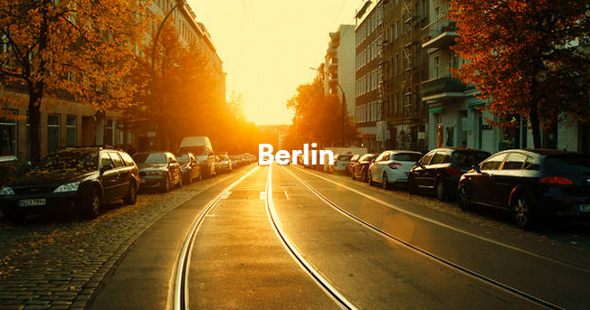
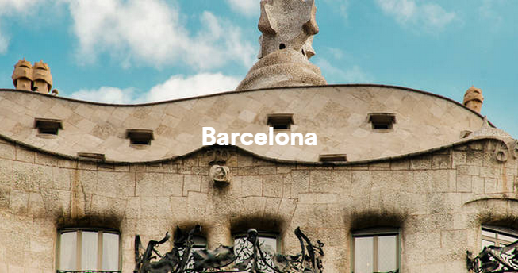

Belong. Connect. Share.
Browse Locations
"Bucharest and Cluj were my favourite destinations!"
Leave just for the Weekend
It is now possible to see representatives of many different historic periods in a short time within the city centre, from a few surviving medieval buildings near Alexanderplatz, to the ultra modern glass and steel structures at Potsdamer Platz.
This beautiful city is full of what European cities are known for (outdoor markets, restaurants, shops, museums and churches) and is fantastic for walking with an extensive and reliable Metro system for more far-flung destinations.
